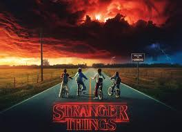
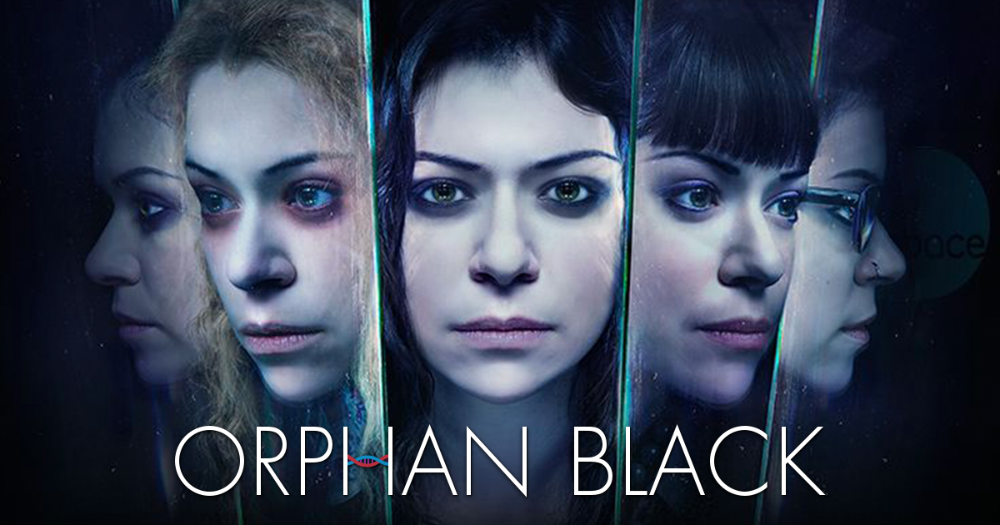

Top 5 de series de ciencia ficción
Dark
Situada en la ficticia ciudad de Winden (Alemania), Dark sigue las secuelas de la desaparición de un niño que
expone los secretos y las conexiones ocultas entre cuatro familias mientras desentrañan lentamente una
siniestra conspiración de viaje en el tiempo que abarca tres generaciones.

Stranger Things
La trama se centra en un grupo de amigos preadolescentes y adolescentes que se enfrentan a una fuerza
misteriosa que proviene de lo profundo de la tierra.
La serie se desarrolla en el pueblo ficticio de Hawkins, Indiana, y está inspirada en los experimentos
militares reales que se llevaron a cabo en Montauk, Nueva York.

Orphan Black
Es una serie de ciencia ficción y drama canadiense-estadounidense que plantea cuestiones sobre la clonación
humana y su impacto en la identidad. La serie cuenta con cinco temporadas y 50 episodios, y finalizó en
2017.

Expedientes Secretos X
Es una serie de televisión estadounidense de ciencia ficción y misterio que se centra en los casos que
investigan dos agentes del FBI, Fox Mulder y Dana Scully. La serie se caracteriza por su combinación de
intriga conspirativa, elementos sobrenaturales y ciencia ficción.

Black Mirror
Es una serie antológica de ciencia ficción que ofrece una visión humorísticamente oscura de la civilización
occidental centrándose en la relación entre la tecnología y la naturaleza humana.